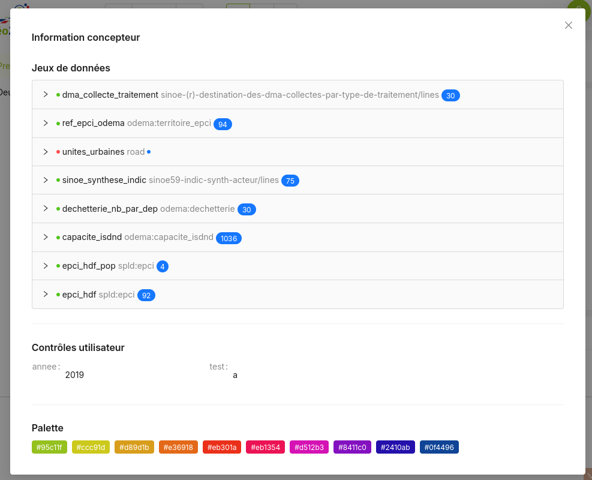

Page
Une page est de tableau de bord est rendue par le composant <Dasbhoard>.
Cette page va contenir :
- Des jeux de données (
<Dataset>) - Une barre de contrôles utilisateurs (
<Control>) - Et bien sûr des dataviz et/ou cartographies !
// Exemple minimaliste. On affiche un camenbert à partir d'un jeu de données
// proposé par l'ADEME sur son portail open-data
import { Dashboard, Dataset, Control, ChartPie } from "@geo2france/api-dashboard"
export const MaPremierePage = () => (
<Dashboard>
<Dataset
id="dma_collecte_traitement"
resource="sinoe-(r)-destination-des-dma-collectes-par-type-de-traitement/lines"
url="https://data.ademe.fr/data-fair/api/v1/datasets"
type="datafair"
pageSize={5000}>
</Dataset>
<Control>
<Select name="annee" options={[2021,2019,2017]} initial_value={2019} arrows={true} />
</Control>
<ChartPie
title="Tonnages de déchets"
dataset='dma_collecte_traitement'
nameKey='L_TYP_REG_DECHET'
dataKey='TONNAGE_DMA' />
</Dashboard>
)
Palette graphique
L'ajout d'une palette permet de personnaliser les couleurs utilisées par les graphiques de la page. La palette est un gradient de couleur définie à partir de 2 couleurs ou plus. Les graphiques utilisent ensuite des couleurs réparties de façon optimale le long de ce gradient.
La palette s'applique à l'ensemble de la page.
<Dasbhoard>
<Palette steps={['#95c11f','#ed1c24','#0f4496']} />
{/* ... */}
</Dasbboard>
Debug
Lors de la conception du tableau de bord, il est possible d'ajouter un composant <Debug/>
directement dans <Dashboard>.
Celui-ci ajoute un bouton dans le coin supérieur droit, permettant d'afficher différentes informations utiles.
